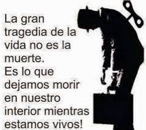

VIVIR LA VIDA ES DIFERENTE A ESTAR MUERTO EN VIDA
La mayoría al leer este título estarán con uno de tres sentimientos, son la de estar confundido de esta aclaración, estar enojados por la aclaración o estar felices por la aclaración., y es que los primeros mencionados no saben porque he hecho esta aclaración, están confundidos y con la curiosidad de saber la explicación que poco a poco van creando en su cabeza ya la respuesta a su pregunta, mientras que los que se identifican con el segundo y tercer sentimiento ya no tienen esa duda ya saben porque uno dice esta aclaración.
Y claro ¿Quién puede estar confundido por este título? ¡solo un tonto no podría comprenderlo!, y pues yo digo que eso no es cierto, pues para explicarlo más fácil, los que tienen el primer sentimiento al leer o escuchar lo que dice en el titulo de este escrito pueden ser los niños o los jóvenes que no pensaron en ese concepto, mientras los que se identifican con el segundo y tercersentimiento ya pueden ser los adultos o los jóvenes que ya tienen algo más de entendimiento del tema que hablaremos, estos se alegran al saber que están viviendo la vida y se enojan al saber que toda la vida han estado muertos en vida.
¿Y como ellos saben si están viviendo su vida o están muertos en la misma?
Es sencillo, se basan en la satisfacción que recibieron a lo largo de su existencia, la satisfacción es algo que no se puede describir con las palabras, pero sabemos cuando estamos satisfechos y sabemos también cuando no lo estamos, si estamos satisfechos con nuestra vida, diremos a gritos que la hemos vivido y la hemos disfrutado, mientras si es lo contrario y estamos insatisfechos pensaremos que el vivir no vale de nada estando en un estado de muerte pues si no estas viviendo estas muerto, pero irónicamente sigues vivo, sigues respirando, por eso decimos que esta muerto en vida y por eso el que se da cuenta de esto está enojado casi hasta el punto de estallar de llanto pues sabe que nada de él está bien.
Y ¿Cómo pudieron llegar a este punto?
Los dos tipos de personas tanto los que están felices y los que están enojados han llegado a este punto por tres factores principales:
• Estar satisfecho consigo mismo
• Las personas con las que esta.
• La salud psicológica de la persona.
Hay más factores, como el comer sano, el hacer ejercicio, para decir si vivimos o no la vida, pero yo quiero llevar este escrito en el estado mental de las dos personas, en lo que pasa dentro de su mente para que ellos sepan que están o no están satisfechos con su vida, a estos tres primeros factores le añadimos un último factor que seria
• Los conflictos o problemas
 Y de este factor sale varias situaciones que ponen a prueba los tres primeros factores mencionados, pues cuando tenemos un problema recurrimos a decirle a las personas con las que normal mente hablamos, en la mayoría de los casos estos te escuchan y te aconsejan, pero ¿qué esperarías si le cuentas tus problemas a una persona que sabes que también tiene problemas? pues la situación empeora pues ya no estas cargando con tus problemas sino con los de otra persona y al reversa pues a la persona a la que le contaste tus problemas que ya de por si tenia los suyos propios le agregas los tuyos o que ni siquiera te presten atención y digan que lo estas diciendo es algo que te inventaste, esto quiebra tu salud psicológica pues no as resulto tus problemas, sino que están empeorando, lo que te lleva a no estar conforme contigo mismo.
Y de este factor sale varias situaciones que ponen a prueba los tres primeros factores mencionados, pues cuando tenemos un problema recurrimos a decirle a las personas con las que normal mente hablamos, en la mayoría de los casos estos te escuchan y te aconsejan, pero ¿qué esperarías si le cuentas tus problemas a una persona que sabes que también tiene problemas? pues la situación empeora pues ya no estas cargando con tus problemas sino con los de otra persona y al reversa pues a la persona a la que le contaste tus problemas que ya de por si tenia los suyos propios le agregas los tuyos o que ni siquiera te presten atención y digan que lo estas diciendo es algo que te inventaste, esto quiebra tu salud psicológica pues no as resulto tus problemas, sino que están empeorando, lo que te lleva a no estar conforme contigo mismo.La mayoría de las personas que están muertas en vida tienen mil y un problemas que resolver, pueden ser los mismos problemas que los que viven la vida, la diferencia fue que los que están viviendo la vida los pudieron resolver conforme llegaban y los que están muertos en vida los fueron acumulando fingiendo que todo estaba bien y no había de que preocuparse por ello, terminando los dos en puntos diferentes teniendo todos los mismo factores, pues nadie nace con una salud psicológica ya desquebrajada.
Concluyendo que, si hay una diferencia en estar viviendo la vida y estar muerto en vida, y es principalmente en su mentalidad, aquella mentalidad determina las soluciones a los problemas y que si no esta bien la mentalidad, la persona no puede estar bien, hay muchas formas de estar muerto en vida, pero esta es la más importante que deberías de saber.